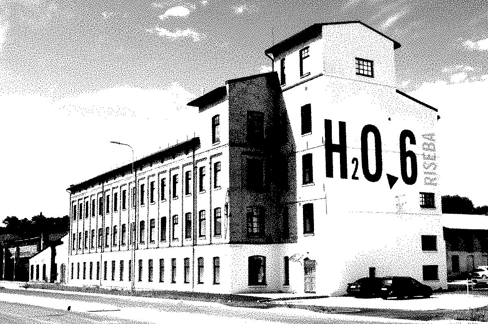

Skola - Pavasaris 2020
2020. gada marta beigās Latvijā, tāpat kā daudzviet pasaulē, tika ieviesti plaši ierobežojumi klātienes mācībām, jo to pieprasīja Covid-19 pandēmijas izraisītā situācija. Rīgas 6. vidusskola (R6vsk) ātri pārgāja uz attālināto mācību režīmu, galvenokārt izmantojot EduPage mācību platformu, kas jau tika lietots stundu sarakstu un paziņojumu pārvaldībai, taču pandēmijas laikā kļuva par galveno vidi gan materiālu publicēšanai, gan tiešsaistes nodarbību organizēšanai.

1. EduPage lietošanas īpatnības
- Tiešsaistes stundas (Online Lessons): skolotāji izmantoja EduPage “Online Lessons” moduli, lai prezentācijas, lekcijas un interaktīvās aktivitātes būtu pieejamas pārlūkprogrammā bez papildu programmatūras.
- Mājasdarbu un testu vadība: mājasdarbi un testi tika augšupielādēti EduPage vidē, kur skolēni varēja tiešsaistē iesniegt darbus un pildīt testus; skolotāji vērtēja tieši sistēmā.
- Datu drošība un šifrēšana: visi skolas dati (klasu saraksti, paziņojumi, skolēnu vērtējumi) tika šifrēti un dublēti uz diviem fiziskiem serveriem, nodrošinot izturību pret datu zudumiem un pastāvīgu pieejamību.
- Komunikācija ar vecākiem un skolēniem: EduPage mobilā lietotne ļāva vecākiem saņemt paziņojumus par stundu izmaiņām, tiešsaistes lekcijām un aktuālajiem uzdevumiem.
2. Praktiskais process
- Pieteikšanās un identifikācija: skolēni un skolotāji izmantoja skolas piešķirtos EduPage kontus; bija pieejama parole atjaunošanas funkcija.
- Stundu grafika pielāgošana: laiki tika mainīti attālinātajam režīmam (piemēram, 1. stunda sākās no 8:00), un tiešsaistes stundu saites tika ievietotas stundu sarakstos.
- Skolas atbalsts: tikšanās (tiešsaistē) ar IT dienestu, promtotot īsas pamācības par EduPage lietošanu, lai palielinātu digitālo pratību.
Pirmā universitāte – Rudens 2021 (RISEBA)
2021. gada rudens semestrī RISEBA pilnveidoja savu e.RISEBA Moodle vidi, ņemot vērā hibrīdās studiju prasības. e.RISEBA kļuva par galveno vidi kursu materiālu publicēšanai, forumu vadībai un video lekcijām, ko pasniedzēji nodrošināja gan Zoom, gan MS Teams ietvaros.
1. e.RISEBA galvenās funkcionalitātes un atjauninājumi
- Moodle bāzes uzlabojumi: kursu izkārtojumi ar jaunu UI, kur pasniedzēji varēja pievienot kursa attēlus un veidot skaidrāku struktūru, kā arī Moodle forumi tiešsaistes diskusijām.
- Digitekа un Motival integrācija: Digitekа platforma sniedza iespēju studentiem novērtēt savas digitālās prasmes un saņemt pielāgotus kursu ieteikumus, balstoties uz Motival testiem.
- E-resursi un bibliotēka: RISEBA Bibliotēkas portālā bija pieejamas e-grāmatas, zinātniskie raksti un datubāzes tieši no e.RISEBA.
- Tiešsaistes lekciju formāts: vairums lekciju tika pārraidītas, izmantojot Zoom vai MS Teams, bet video ieraksti un prezentācijas tika glabātas Moodle.
2. Mācību procesa organizācija
- Pieteikšanās e.RISEBA: studenti izmantoja sava universitātes e-pasta datus SSO risinājuma ietvaros.
-
Hibrīdā lekcija:
- Sinhronā komunikācija: Zoom/Teams sesijas, kas sinhronizētas ar Moodle kursa noformējumu.
- Asinhronā piekļuve: videoklipu ieraksti glabājās Moodle “Video resources” sadaļā.
- E-mācību aktivitāšu žurnāla analīze: kursu koordinatori pārskatīja studentu iesaisti (testu izpildi, video skatīšanās laiku) vismaz reizi nedēļā.
LU – Pavasaris 2022 (E-studijas)
2022. gada pavasarī Latvijas Universitāte (LU) turpināja attīstīt savu E-studijas platformu, balstītu uz Moodle. Galvenais uzsvars bija uz BigBlueButton (BBB) video konferenču integrāciju, kursu vizuālā noformējuma uzlabojumiem un MS Teams/OneDrive savienojumu.
1. Galvenie E-studiju uzlabojumi
- BigBlueButton integrācija: pasniedzēji varēja iestatīt BBB sesijas tieši Moodle kursā, nodrošinot streaming un ierakstu iespējas.
- Kursa vizuālā dizaina pilnveide: kursu veidotāji pievienoja kursa galvenes attēlus un pielāgoja kursu sadaļu krāsu shēmas, izmantojot drag-and-drop.
- MS Teams un OneDrive integrācija: Office365 konti nodrošināja automātisku piekļuvi OneDrive dokumentiem, kur pasniedzēji varēja glabāt papildu video un failus.
- Mākonī glabātas lekcijas: visi BBB ieraksti tika automātiski augšupielādēti Moodle “Video lectures” kategorijā; 2022. gadā LU nodrošināja lielāku OneDrive vietu, lai pasniedzēji varētu augšupielādēt papildu materiālus.
- FORTHEM Digital Academy dalība: LU ieviesa virtuālās mobilitātes un MOOC kursu sadaļu Moodle, ļaujot studentiem reģistrēties starpuniversitāšu projektiem.
2. Praktiskie aspekti un atbalsts
- Pieteikšanās E-studijām: studenti izmantoja savu LU Office365 kontu, lai autorizētos Moodle vidē; paroles atjaunošana notika caur Office365.
-
Tiešsaistes un asinhronās aktivitātes:
- Tiešsaistes sesijas (BBB): kursu mācībās tika organizētas vismaz divas BBB sesijas nedēļā, ar automātisku ierakstu pieejamību 24 stundas pēc nodarbības.
- Asinhronais atbalsts: Moodle forumos un Q&A sadaļās studenti varēja uzdot jautājumus, un pasniedzēji regulāri sniedza atbildes.
- Studentu digitālo prasmju uzlabošana: fakultāte rīkoja seminārus par datu pārvaldību Moodle, autortiesību jautājumiem un informācijas kvalitātes novērtēšanu tiešsaistes avotos.